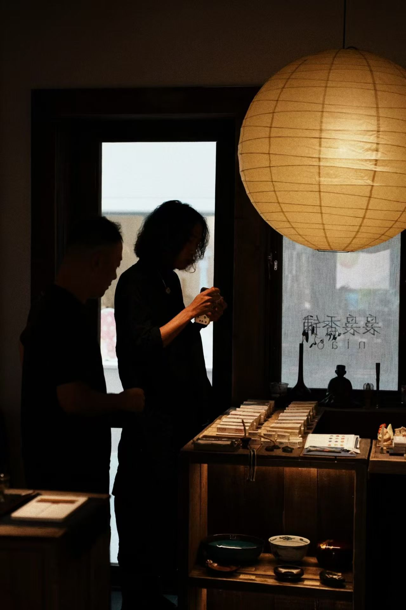

手工皂模块
手工皂（冷制皂、洗头皂、环保洗碗皂）是布里斯湾销量第三的品类。它看似普通，但有几个被低估的优势：
① 刚需消耗品——每天都要用，用完必须买 ② 供应链成熟——10年天府八吉积累的供应商关系 ③ 环保属性——天然成分+无塑料包装，符合"慢生活"价值观
手工皂的制作过程本身就是好内容——冷制皂需要4-6周皂化期，"等待"本身就是"慢"的体现。可以拍"一块皂的诞生"系列内容。
手工皂模块可以作为独立迷你店（类似Lush但更质朴），也可以嵌入袅袅香铺或清酒组合店。它的优势是"不需要教育市场"——人人都用皂。
手工皂不是最性感的品类，但可能是最稳健的。它验证的是"日常消耗品+审美选品"这个模型的普适性。
71